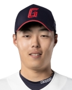

타자 편
 |
이름/ 생년월일 |
등번호/ 포지션 |
경기 수 | 타수 | 타율 | 안타 | 2루타 | 3루타 | 홈런 | 타점 | 득점 | 도루 | 볼넷 | 삼진 | 병살 | 출루율 | 장타율 | OPS | wRC+ | WAR |
|---|---|---|---|---|---|---|---|---|---|---|---|---|---|---|---|---|---|---|---|---|
| 한동희/ 1999.06.01 |
25/ 3루수 |
108 | 319 | 0.223 | 71 | 11 | 0 | 5 | 32 | 30 | 1 | 26 | 58 | 16 | 0.279 | 0.304 | 0.583 | 62.1 | -0.37 | |
| 선정 이유 | 한동희는 지난 2022년 4월 월간 MVP와 함께 유망주 딱지를 완전히 떼어버리는 듯 했다. 시즌 중반 햄스트링 부상 이후 시즌 끝까지 그 페이스를 이어가진 못했지만 많은 팬들은 2022시즌을 끝으로 은퇴하는 이대호의 뒤를 이어 한동희가 팀의 4번타자 역할을 해줄 것이라고 기대했다. 팀 차원에서도 이대호의 은퇴로 인해 하락할 수 밖에 없는 팀의 장타력 보강을 위해 비시즌 기간동안 타격코치의 주도 하에 타구 발사각 올리기 프로젝트를 진행했고 한동희는 스윙 메커니즘을 수정했다. 시범경기에서 홈런을 쏘아올리며 프로젝트가 순조롭게 진행되는 것 같았으나, 시즌이 시작되고 잠실야구장에서 펼쳐진 두산과의 개막전 7타수 무안타 침묵(본인은 이 경기를 직관했다. 팀은 11회 말 로하스의 끝내기 홈런으로 패배.)을 시작으로 4월 한달 내 타격이 힘을 쓰지 못하자 본인의 원래 타격폼으로 돌아왔지만 어긋난 메커니즘은 결국 시즌 끝날 때까지 맞춰지지 않았다. 다음 시즌은 프로 7년차가 되기 때문에 더 이상 어린 선수가 아니다. 또한 데뷔 이후부터 쭉 3루 수비에 대한 평가(송구, 포구, 수비범위)는 좋지 않았는데 올 시즌은 타격이 본인 생각대로 되지 않아서인지 수비에서도 실책을 무더기로 저지르는 등 공수 양면에서 팀에 마이너스가 되었다. 올해 11월 상무에서 전역한 나승엽이 3루수 불가판정을 받은 것이 아니라면 다음 시즌부터는 팀의 내야 수비력 상승과 본인이 느끼는 수비 부담 때문에 타격 사이클에 영향을 주는 것을 덜어주기 위해서라도 1루수 한동희의 모습을 봤으면 한다. 항저우 아시안 게임 출전 불발로 인한 병역 관련 문제도 개인적 생각으로는 빠르게 상무에 지원하는 것이 좋을 것 같다는 생각이다. 물론 이 부분은 구단과 협의를 통해서 충분히 좋은 판단을 내릴 것이라고 생각한다. 만약 2024시즌에도 함께 한다면 본인의 피나는 노력은 당연한 것이고 팬으로서는 멘탈적인 부분 잘 챙겼으면 좋겠다. 특히 본인이 안풀릴 때 경기를 보고 있으면 생각이 많은 것이 티가 난다. 이러나 저러나 우리에겐 '포스트 이대호'인 선수이고 팀의 4번타자를 맡아줘야 할 선수이기 때문이다. 다음 시즌부터는 2022시즌 4월의 퍼포먼스를 쭉 유지했으면 좋겠다. | |||||||||||||||||||
| 이름/ 생년월일 |
등번호/ 포지션 |
경기 수 | 타수 | 타율 | 안타 | 2루타 | 3루타 | 홈런 | 타점 | 득점 | 도루 | 볼넷 | 삼진 | 병살 | 출루율 | 장타율 | OPS | wRC+ | WAR | |
|---|---|---|---|---|---|---|---|---|---|---|---|---|---|---|---|---|---|---|---|---|
| 유강남/ 1992.07.15 |
27/ 포수 |
121 | 352 | 0.261 | 92 | 13 | 0 | 10 | 55 | 45 | 1 | 37 | 64 | 13 | 0.342 | 0.384 | 0.725 | 106.1 | 2.30 | |
| 선정 이유 | 2017시즌 이후 야구팬 전체에게 충격을 주었던 강민호의 삼성으로의 FA 이적 이후 5년간 주전 포수라고 할 수 있는 인물이 없었던 롯데자이언츠는 2022시즌 종료 후 유강남에게 4년 총액 80억의 거액을 안기며 LG트윈스에서 이적시킨다. 사실 성적"만" 보면 포수임을 감안했을 때 그렇게 나쁘지 않은 성적인 것은 맞다. 하지만 유강남은 고액연봉자라는 점이다. 2023시즌부터 도입된 샐러리 캡 제도 때문에(본인은 이 제도는 잘못됐다고 생각한다. 사실상 구단주들이 돈 쓰기 싫어서 억지로 밀어붙인 제도이기 때문이다. 이럴거면 야구단을 운영하고 싶어하는 타 기업에게 매각을 하는 것이 맞다고 생각한다.) 구단들이 샐러리 캡을 초과하지 않는 선에서 연봉계약을 맺어야 하는데 유강남 외에도 2022시즌 이후 맺은 다수의 고액 계약 (또 다른 FA 영입 선수인 노진혁, 한현희 및 비 FA 다년계약의 박세웅) 때문에 2023시즌 이후의 구단 운영이 빠듯해졌다. 이는 결국 2023시즌 종료 이후 열린 FA시장에서 안치홍이 한화이글스로 이적하는 사실상의 사유가 된다. 더욱 아쉬운 점은 유강남 이적 당시 LG는 그의 대체자로 또 다른 FA 신청자인 KIA타이거즈의 박동원을 4년 총액 65억의 계약으로 영입했고 공, 수에서 박동원의 영입 효과를 톡톡히 보며 29년만의 한국시리즈 우승을 달성하며 수많은 LG팬들의 한을 풀어주었다.(본인은 FA 시장 오픈 당시 박동원을 영입하길 바랐다.) 물론 롯데가 박동원을 FA로 영입했다고 해도 객관적인 전력이 우승 전력은 아니었던 만큼 우승은 힘들었을 것이다. 또, 서울 출신 서울 연고 구단 소속 선수를 지방 구단으로 이적시키려면 어느 정도의 오버페이를 감수해야 하는 것은 맞다. 그럼에도 불구하고 유강남의 올 시즌 성적표는 냉정하게 80억 규모의 계약을 체결한 선수가 보여줘야할 성적은 아니다. 다만 미래의 주전 포수로서의 가능성이 보이는 손성빈의 상무 전역 이후 일정 수준의 휴식을 부여받으며 후반기에 본인의 성적도 반등했고 무엇보다 손성빈의 성장에도 직접적인 도움을 주었다. 이에 따라 2024시즌에도 유강남에게 일정량의 휴식이 부여될 것으로 보이는데 휴식이 부여되는 만큼 후반기의 성적을 꾸준히 이어갔으면 좋겠다. 다만 2024시즌부터 스트라이크/볼 판정에 대한 로봇 심판 도입으로 인해 유강남이 포수로서 가진 가장 큰 장점이었던 프레이밍(포수가 투수의 공을 포구할 때 심판에게 유리한 판정을 받기 위해 미트를 움직이는 행위)이 사실상 쓸모 없는 기술이 되었기 때문에 포수로서의 단점이었던 볼배합 및 도루저지에 대한 발전도 필요하다. | |||||||||||||||||||
| 이름/ 생년월일 |
등번호/ 포지션 |
경기 수 | 타수 | 타율 | 안타 | 2루타 | 3루타 | 홈런 | 타점 | 득점 | 도루 | 볼넷 | 삼진 | 병살 | 출루율 | 장타율 | OPS | wRC+ | WAR | |
|---|---|---|---|---|---|---|---|---|---|---|---|---|---|---|---|---|---|---|---|---|
| 노진혁/ 1989.07.15 |
52/ 유격수 |
113 | 334 | 0.257 | 86 | 26 | 1 | 4 | 51 | 43 | 7 | 45 | 84 | 3 | 0.347 | 0.377 | O.724 | 103.0 | 2.31 | |
| 선정 이유 | 2023시즌 종료 이후 4년 총액 50억의 FA 계약을 통해 NC다이노스에서 롯데자이언츠로 이적한 노진혁은 팀 창단 이래 수비형 유격수만 보유했던 롯데에게 타격, 특히 장타력을 겸비한 유격수가 무엇인지에 대해 보여줄 것으로 예상했다. 본인도 이런 이유때문에 노진혁을 적절한 가격에 잘 영입했다는 생각을 했다. 유격수가 변변치 않았던 것도 있지만 한 시즌 20홈런을 쳐본 적이 있을 정도로 장타력이 있고 찬스 상황에서 강점을 보이는 점 때문이었다. 이런 기대에 부응하듯 시즌 개막 이후 6월 중순 부상으로 인해 1군 엔트리에서 말소되기 전까지 팀의 타자 중 거의 모든 타격지표에서 최상위권을 마크하고 있었다. "1군 엔트리에서 말소되기 전까지는" 말이다. 사실 노진혁은 내구성이 그리 뛰어난 선수는 아니었는데, NC 시절부터 고질적인 허리 문제때문에 계속적인 관리가 필요했다. 구단과 코칭스태프, 팬 모두 그 사실을 인지하고 있던 터라 당장 타선의 구멍을 어떻게 메우냐가 관건이었지, 노진혁이 돌아오고 나서의 퍼포먼스에 대한 우려는 대부분 하지 않았을 것이다. 그리고 7월 초, 1군 엔트리 등록 이후의 노진혁은 완전히 다른 선수가 되어버렸다. 부상 이전의 팀내 최상위권을 자랑하던 타격 성적은 뚝 떨어지기 시작했다. 무엇보다 2022년 시즌 대비 홈런의 개수가 11개나 줄었다는 점이 눈에 띄는데, 이 부분은 상대적으로 타자 친화 구장이라 평가받는 창원NC파크를 홈 구장으로 사용하다가 펜스가 아주 높아 투수 친화 구장으로 평가받는 사직야구장으로 홈 구장을 옮긴 것을 감안하더라도 현저한 차이다. 외국인 타자의 실패와 겹쳐 팀내 최다 홈런 타자의 홈런 수가 17개일 정도로 '거포'라고 할 수 있는 타자가 없는 현 롯데의 타선에서 노진혁의 장타는 꼭 필요한 존재다. 그리고 노진혁의 성적이 떨어진 데에는 한가지 이유가 더 있는데 그것은 친정팀인 NC상대로 너무 못쳤다는 것이다. 소위 말하는 친정사랑을 실천하고 있는 것인데, 1할이 채 안되는 NC전 타율을 보여주고 있다. 이적 전 롯데 상대로 그야말로 날아다녔던 점 때문에 성적 차이가 더욱 두드러진다. 실제로 2022년 성적에서 롯데전 성적을 뺀 것과 2023년 성적에서 NC전 성적을 뺀 기록을 비교하면 타율과 OPS에서는 큰 차이를 보이지 않는다. 다음 시즌에는 잃어버린 장타력을 되찾고 한 팀당 시즌에 16번씩 맞붙는 만큼 NC를 상대로 좋은 성적을 보여주어야 할 것이다. 그리고 선수 본인이 제일 심혈을 기울이겠지만 부상 당하지 말았으면 좋겠다. | |||||||||||||||||||
|  | 이름/ 생년월일 |
등번호/ 포지션 |
경기 수 | 타수 | 타율 | 안타 | 2루타 | 3루타 | 홈런 | 타점 | 득점 | 도루 | 볼넷 | 삼진 | 병살 | 출루율 | 장타율 | OPS | wRC+ | WAR |
|---|---|---|---|---|---|---|---|---|---|---|---|---|---|---|---|---|---|---|---|---|
| 고승민/ 2000.08.11 |
65/ 1루수 (우익수) |
94 | 254 | 0.224 | 57 | 14 | 2 | 2 | 24 | 35 | 8 | 42 | 64 | 2 | 0.332 | 0.319 | 0.651 | 80.4 | 0.15 | |
| 선정 이유 | 지난 22시즌 전 프랜차이즈 스타였던 손아섭이 4년 총액 64억의 FA계약과 함께NC다이노스로 이적했고, 우익수 포지션이 무주공산이 되었다. 그리고 경쟁 끝에 우익수 자리를 차지한 선수는 군 전역한 고승민이었다. 2022시즌 전반기에는 본인의 데뷔 첫 홈런을 2점차 9회 초 2아웃 상황에서 역전 쓰리런으로 쏘아올린 것을 제외하면 공, 수에서 모두 부진했다. 하지만 후반기에는 4할의 타율과 1이 넘는 OPS를 기록하며 당당히 우익수 자리를 차지했고 팬들이 한동희와 함께 이번 시즌 전 가장 기대를 많이한 선수였다. 고승민도 한동희와 마찬가지로 비시즌 기간 타구 발사각을 올리는 훈련을 진행했는데, 이게 독이 되어 본인의 확실한 장점이었던 타구속도는 물론, 자신만의 밸런스도 잃어버렸다. 그나마 다행이라면 선구안은 살아있어서 타율이 워낙 낮긴하지만 타율과 출루율의 차이가 1할이 넘게 나고 있다는 점이다. 또, 2022시즌 후반기 고승민의 유일한 단점이었던 좌투수 상대 약점도 시즌 말미로 갈수록 극복하고 있었는데 2023시즌에 들어서는 다시 좌투수에 매우 약하다. 아무리 좌타자라고 해도 좌투수 상대로 2할대 초중반정도의 타율은 보여야 한다고 생각을 한다. 2할이 채 되지 않는 좌투 상대 타율은 본인을 반쪽짜리 선수로 남게 할 것이다. 그리고 선수단에 외야수가 너무 많고 발사각 상승으로 인한 장타 상승을 기대한 것 때문인지 2023시즌은 1루수로 활용하겠다는 방침을 두어 타격훈련보다도 1루 수비 훈련을 더 많이 진행했는데, 고교 재학 당시 2루수였던 것 때문인지 수비에서는 큰 문제가 없었지만 1루수의 필수 덕목인 타격 성적이 뒷받침되지 않았다는 점이 매우 아쉽다. 고승민 개인의 아쉬움으로는 본인이 타격 부진의 늪에서 방황하는 사이 1루수와 우익수 모두 주전 경쟁이 힘들어졌다는 것이다. 1루수의 경우 상무에서 전역한 나승엽이 있고(본인은 전술했듯 한동희를 1루수로 세우고 입단 당시 3루수였던 나승엽을 3루수로 활용했으면 한다.) 우익수의 경우 기존 선수들의 부상때문에 1군 엔트리에 등록된 2년차 윤동희가 항저우 아시안 게임의 최종엔트리와 신인왕 후보에 들 정도로 활약하며 2024시즌의 주전 우익수를 찜해놓은 상황이기 때문이다. 그나마 다행이라면 다행인 것은 2023시즌 종료 후 주전 2루수였던 안치홍이 FA계약을 통해 한화이글스로 이적하면서 이번엔 2루수가 무주공산이 되었고 시즌 종료 후 고승민은 본인의 원 포지션이었던 2루수 훈련을 받고있다는 점이다. 해당 글을 작성하는 시점에서 외국인 타자의 계약 소식이 들려오지 않았지만 외야수 한 자리로 예상되는 만큼 다음 시즌에는 주전 2루수로 맹활약하는 모습을 볼 수 있길 바란다. | |||||||||||||||||||
투수 편
| 이름/ 생년월일 |
등번호/ 보직 |
경기 수 | 이닝 수 | ERA | 승 | 패 | 세이브 | 홀드 | 피안타 | 피홈런 | 4사구 | 탈삼진 | 실점 | 자책점 | WHIP | WAR | |
|---|---|---|---|---|---|---|---|---|---|---|---|---|---|---|---|---|---|
| 한현희/ 1993.06.25 |
16/ 중간계투 (선발투수) |
38 | 104.0 | 5.45 | 6 | 12 | 0 | 3 | 123 | 11 | 56 | 74 | 69 | 63 | 1.61 | -0.22 | |
| 선정 이유 | 사실 이 선수에 대해서는 별로 할 말이 없다. 이 선수가 원 소속구단이 롯데였다면 이 목록에 할당하지도 않았을 것이다. 3+1년 총액 40억의 FA 계약만 아니었어도 말이다. 이 중 22억이 옵션 계약이라고는 하지만 성적도 몇년간 하락세인데다가 FA 등급제에 의해 A등급을 받아 전년도 연봉의 200%와 보류선수 20인 외 1명을 보상선수로 내주면서까지 영입을 했어야 하나? 에 대해서는 생각을 해봐야 한다. 선수에게는 미안하지만 원 소속구단이었던 키움히어로즈는 물론, 타 구단 또한 영입할 의사가 없었던 것을 생각했을 때 정말 한현희를 영입할 생각이었더라도 다른 방법으로 영입할 수는 없었을까 싶다. 이 FA 계약으로 한현희와 똑같이 빠른 공을 던지는 사이드암 "유망주"인 이강준이 보상선수로 뽑혀갔다. 또한 한현희의 경우 저연차 때부터 워크에씩에 관한 이야기가 꾸준하게 안좋은 선수 중 하나였다. 그리고 이 계약은 결국 잘못된 계약이라는 것을 한현희 본인이 성적으로 증명했다. 사실 1년차 성적가지고 왜이리 날선 반응이냐고 물을 수도 있다. 상기된 두 명의 FA 계약자와 한현희의 가장 큰 다른 점은 한현희는 투수라는 것이다. 한현희는 누적된 혹사로 인해 예전만큼의 빠른 공은 던지지 못하기 때문에 구위가 떨어졌는데 제구력도 같이 하락했다는 것이다. 즉, 반등의 여지가 많지 않다는 말이 된다. 이것은 선수의 잘못이 아닌 명백한 운영진의 잘못이다. 전임 단장은 프랜차이즈 스타에 대한 FA협상에서는 에이징커브를 우려해 금액을 최대한 깎으려들다가 결국 이적하게 만들었으면서 누가봐도 악성계약임이 분명한 계약은 체결한 것이 도무지 이해되지 않는다. 결국 2023시즌 이후 경질당했지만, 신임 단장은 제발 이런 악성계약은 하지 말아야 할 것이다. | ||||||||||||||||